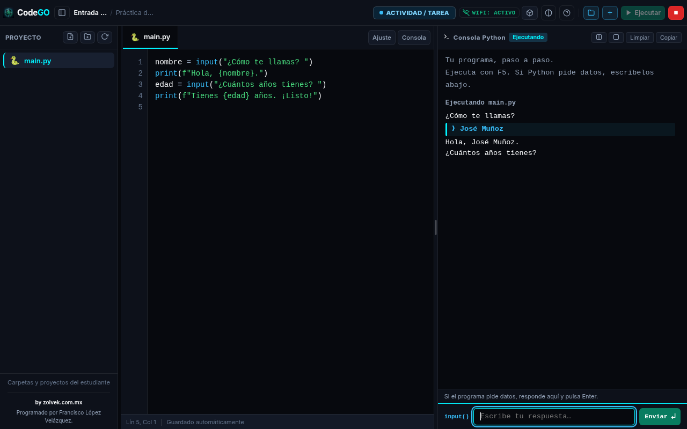

Windows
x64
Descargar instalador ↓
v1.1.0 · Windows · macOS · Linux
Aprende Python.
Sin complicaciones.
Editor de escritorio ligero con consola interactiva en tiempo real y modo de evaluación supervisada.

El código a un lado, la terminal al otro. Cuando Python ejecuta input(), tu respuesta siempre tiene su lugar.
01 · Práctica libre
Modo Actividad / Tarea
Diseñado para que los estudiantes experimenten con total libertad en clase o en casa, sin bloqueos ni restricciones.
- Consola interactiva con soporte nativo para
input() - Apertura y creación de proyectos en cualquier carpeta
- Autoguardado inmediato antes de ejecutar (F5)
- Conectividad a internet sin restricciones
02 · Evaluación supervisada
Modo Examen Blindado
Para evaluaciones académicas con integridad. Elimina distracciones y sella el trabajo final del alumno.
- Ventana en pantalla completa fija (modo kiosk anti-alt-tab)
- Desconexión Wi-Fi automática (restaurable al entregar o con PIN)
- Watchdog de audio anti-silencio y alerta visual de 12 segundos
- Entrega sellada empaquetada en ZIP auditado con SHA-256
Requisito de Python: CodeGO ejecuta el motor de Python instalado en tu sistema. Requiere Python 3.12 o 3.13 con pip.
Descargar Python ↗